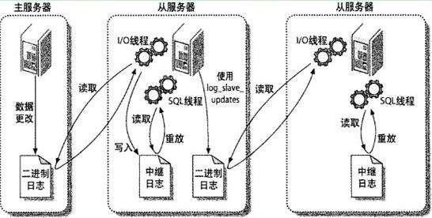
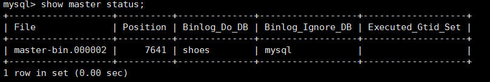
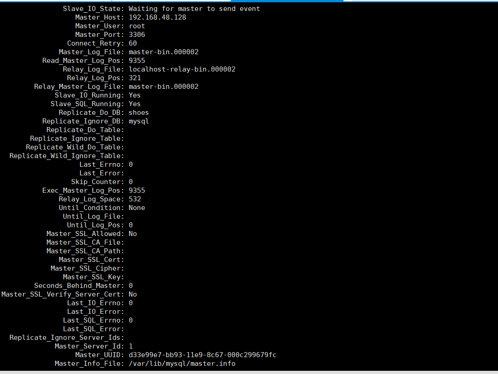
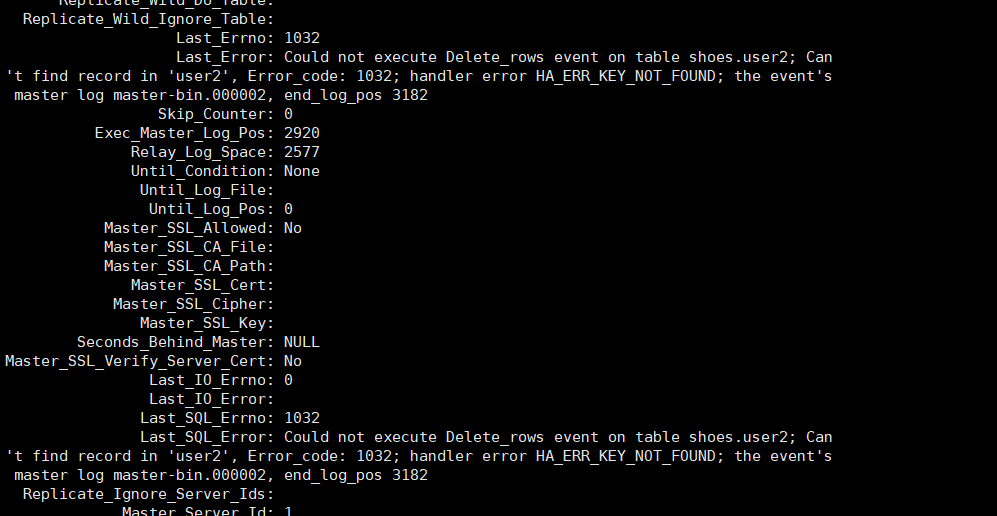
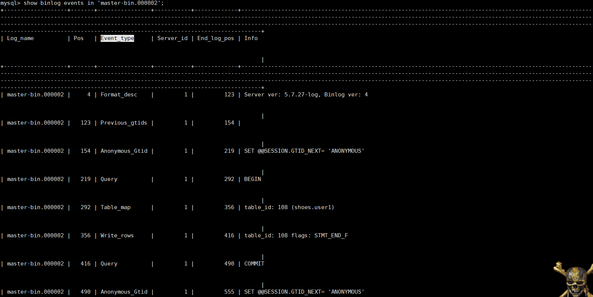

MySQL主从架构是MySQL集群中最基本也是最常用的一种架构部署，能够满足很多业务需求，常见的有一主一从或者一主多从。可以防止单一主机的数据丢失，提高数据的安全性，务上可以实现读写分离，可以把一些读操作在从服务器上执行，减小主服务器的负担。
mysql主从复制是指数据可以从一个mysql服务器节点复制到一台或者多台mysql服务器上，多个从服务器采用异步的方式更新主数据库的变化。MySQL主从同步是基于从库对主库binlog文件的增量订阅来实现,更新的事件类型写入到主库的binlog文件中，日志用于记录所有更新了数据或者已经潜在更新了数据的所有语句，以“事件”的形式保存，它描述数据更改，它是以二进制的形式保存在磁盘中。以.000001的方式结尾，binlog文件大小和数字会不断增加，当mysql重启时，数字会不断递增。
主从复制的原理图：

对于每一个主从连接，都需要三个进程来完成，master（binlog dump thread）、slave（I/O thread 、SQL thread）。
下面讲下在linux系统下实现主从同步的相关操作步骤：
1、编辑my.cnf文件
vi /etc/my.cnf2、添加配置：
log-bin=master-bin
server-id=1
#需要同步的数据库
binlog-do-db=shoes
#不需要同步的mysql系统数据库
binlog-ignore-db=mysql
3、授予从库replication权限
grant replication slave on *.* to 'root'@'192.168.48.133' identified by '123456'; 这里的ip地址和用户密码都是从库的，如果提示：Your password does not satisfy the current policy requirements 说明你的密码是不安全的，此时需要设置密码的校验级别，可自行百度。
设置完毕后，重启master的mysql服务。
使用命令: mysql -uroot -p 登录mysql服务后，执行 show master status；
会出现类似如图所示的信息：

记录下File和Position的值，后面从库配置的时候需要使用。
好了，到这里主库配置完毕，接下来是从库的配置。
同样修改my.cnf文件，添加如下信息：
server-id=2
log-bin=mysql-bin
replicate-do-db=shoes
replicate-ignore-db=mysql配置连接主服务器的信息：
mysql> CHANGE MASTER TO
-> MASTER_HOST='192.168.48.128',
-> MASTER_USER='root',
-> MASTER_PASSWORD='123456',
-> MASTER_LOG_FILE='mysql-bin.000002',
-> MASTER_LOG_POS=7641;
mysql> start slave;这里的 MASTER_LOG_POS 是要告诉slave库从master二进制日志的哪个地方开始复制，也就是前文查看主库状态的Position的值。
然后查看slave的状态：
mysql>show slave status\G会出现如图所示的信息：

当出现Slave_IO_Running和Slave_SQL_Running都是yes,并且Slave_IO_State是：Waiting for master to send event的时候，说明配置是成功的。如果是Connecting to.......说明没连上，这时候要检查下ip地址、账号或者防火墙等问题了。
在复制的过程中，由于一些其他不当的操作，可能会遇到如图所示类似的问题，

这种情况比如说我在从库上把数据删掉了，然后主库又进行删除，此时找不到从库上对应的记录就会报错，当发生这样的错误之后，从库就无法更新主库的数据了。如果主库都已经删除了，那么从库也就没有必要保留了，这种情况的话可以设置从库复制的时候跳过当前这个事件，需要暂停slave操作:
stop slave;
set global sql_slave_skip_counter=1;
start slave;类似的问题还有比如说重复插入，更新丢失，relay log 损坏等，都可以采取相应的策略来恢复，如重新选择到同步的binlog和POS点，然后重新做同步等。
binlog日志文示例
使用命令
mysql> show binlog events in 'mysql-bin.000002;
查看binlog日志。

mysql的binlog格式分为三种：
Statement
每一条会修改数据的 SQL 都会记录到 master 的 bin-log 中。slave 在复制的时候 SQL 进程会解析成和原来 master 端执行过的相同的 SQL 再次执行。
优点：不需要记录每一行的变化，减少了binlog日志量，节约了IO，提高性能。
缺点：由于记录的只是执行语句，为了这些语句能在slave上正确运行，因此还必须记录每条语句在执行的时候的一些相关信息，以保证所有语句能在slave得到和在master端执行时候相同的结果。另外mysql 的复制,像一些特定函数功能，slave可与master上要保持一致会有很多相关问题
row
日志中会记录成每一行数据被修改的形式，然后在 slave 端再对相同的数据进行修改。
优点：Binnary Log可以不记录执行的Query语句的上下文相关信息，不会出现某些特定情况下存储过程或function，以及trigger的调用和触发器无法被正确复制的问题。
缺点：如果批量修改数据，记录的不是批量修改的SQL语句事件，而是每条记录被更改的SQL语句，比如说update语句，会记录每一行被修改的sql语句，当alter表的时候，更是会产生大量的日志。
Mixedlevel
以上两种的结合体，MySQL会根据执行的每一条具体的sql语句来区分对待记录的日志形式，也就是在Statement和Row之间选择一种.新版本的MySQL中队row level模式也被做了优化，并不是所有的修改都会以row level来记录，像遇到表结构变更的时候就会以statement模式来记录。
因此，企业生产上使用哪种弄场景可以根据具体的场景来选择合适的格式。
查看binlog格式使用命令：
mysql> show global variables like "%binlog_format%";
+---------------+-------+
| Variable_name | Value |
+---------------+-------+
| binlog_format | ROW |
+---------------+-------+格式可以在my.cnf文件中进行配置：
binlog_format="ROW" 或者在运行时动态的修改格式：
mysql> SET SESSION binlog_format = 'STATEMENT';通过mysql复制可以将读操作分布在多个服务器上，实现对密集型应用的优化，通过简单的代码修改就可以实现基本的负载均衡，并且能够帮助应用程序避免mysql的单点故障，实现mysql的高可用性。